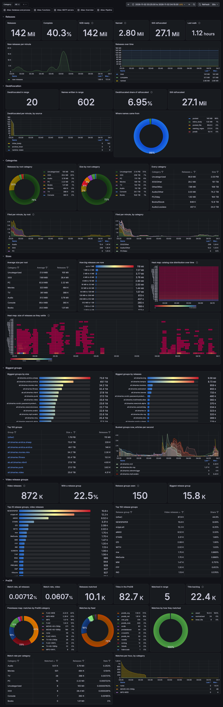
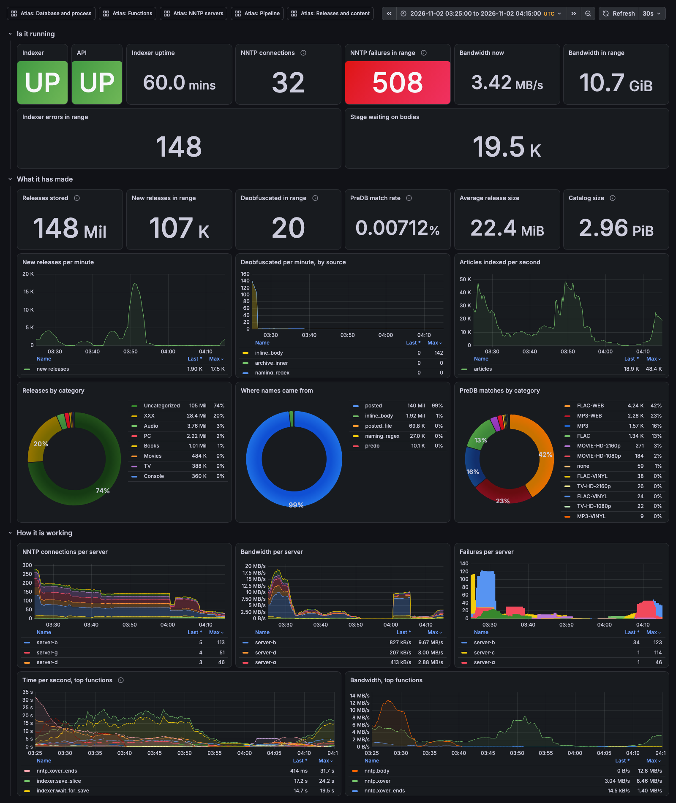
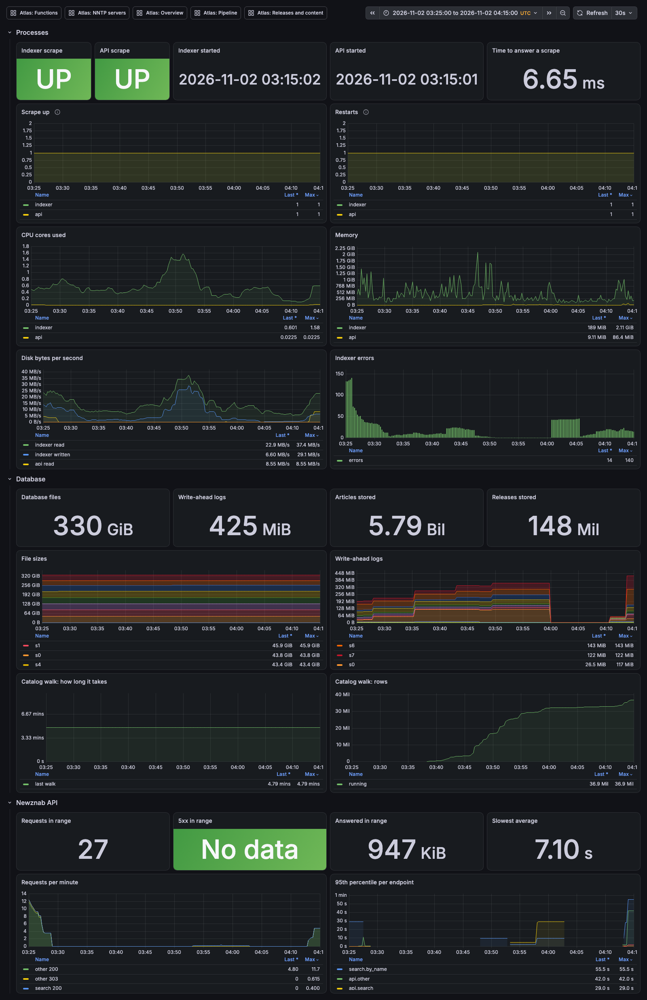
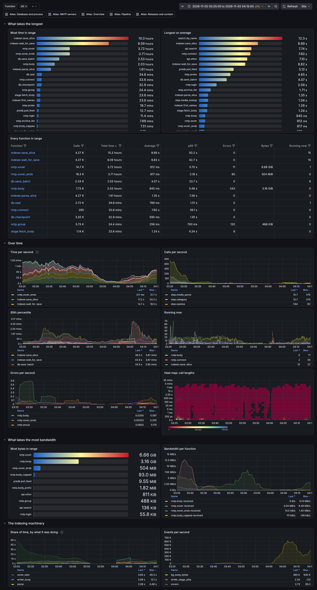
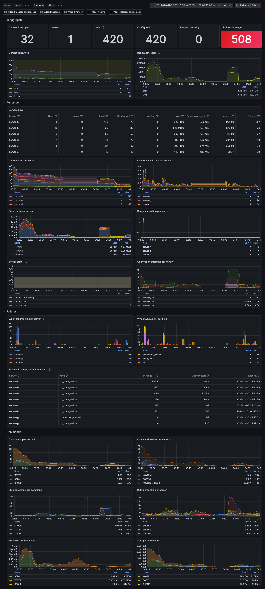
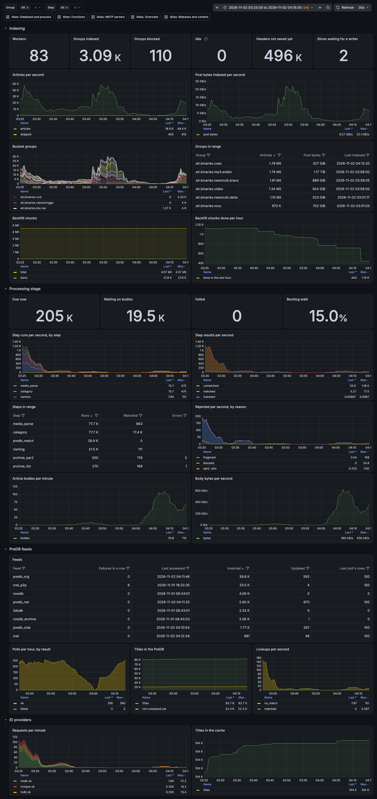

Releases and content
What Atlas has stored: categories, sizes, groups, release groups and the PreDB. JSON

Grafana dashboards for Atlas, a self-hosted Usenet indexer and Newznab server. Select a dashboard to see it full size.
How Atlas is doing at a glance. JSON

Scrape health, the processes, the database files and the Newznab API. JSON

Every timed operation: what takes longest, what runs most, what moves the most bytes, what fails. JSON

Connections, bandwidth, latency and failures, in total and per server. JSON

From headers to named, categorized releases: indexing, the processing stage, the PreDB and ID providers. JSON

What Atlas has stored: categories, sizes, groups, release groups and the PreDB. JSON
